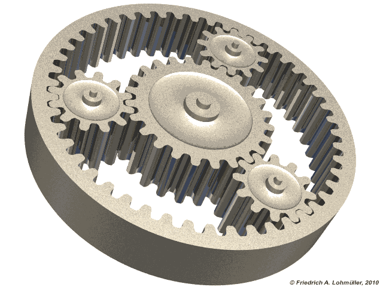
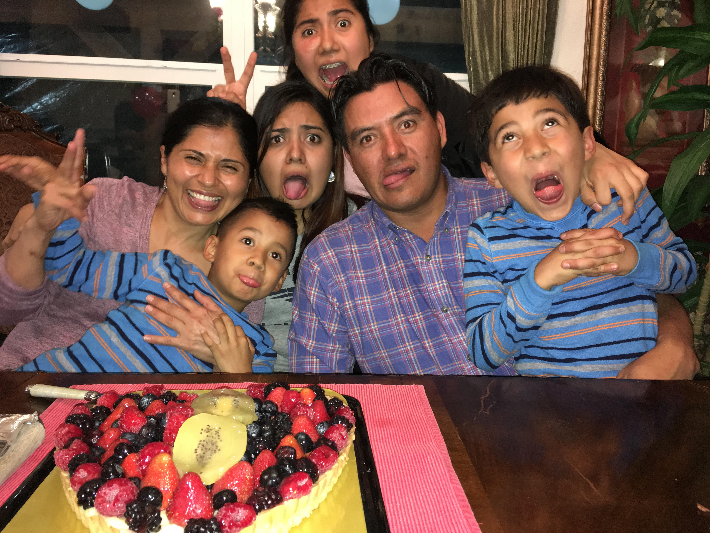
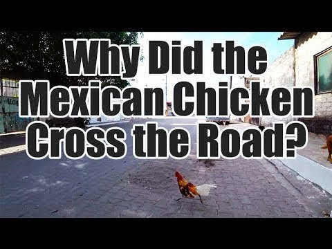

I have big aspirations for my future career and hope to work in STEM inspiring young girls to pursue careers in STEM.
I have practice coding in Scratch and Python, but am excited to learn many new languages.

I am very family oriented and love spending time with them.Having an older sister has taught me to be an active listener and follow the instructions. I have two younger brothers that have taught me to be patient and confident. Being a first generation student to graduate from college has allowed to me to cherish learning and strive to study.
I also have a really great sense of humor, my favorite gif of all time is
The dancing chihuahua.
Music Likes:
Cumbias
Indie Rock
Merengue
Dislikes:
I am open to all foods except… Avocado
Favorite apps:
Instantgram
Snapchat
Tiktok
Now I did brag about my sense of humor so..
Here are a few jokes!

Want to see the answer?